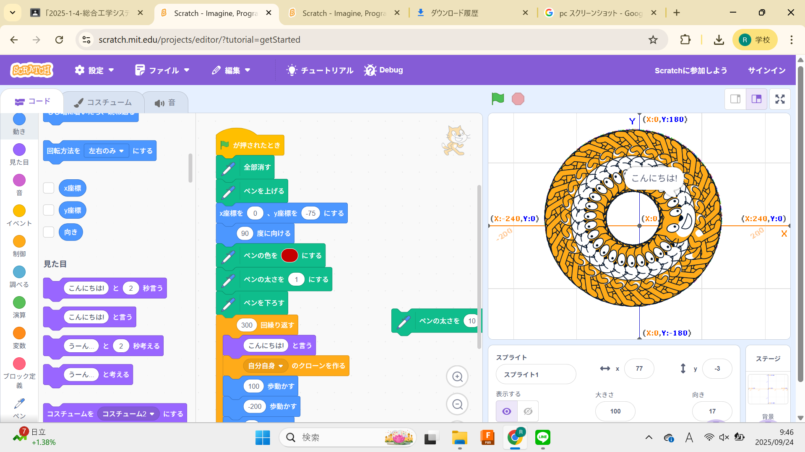
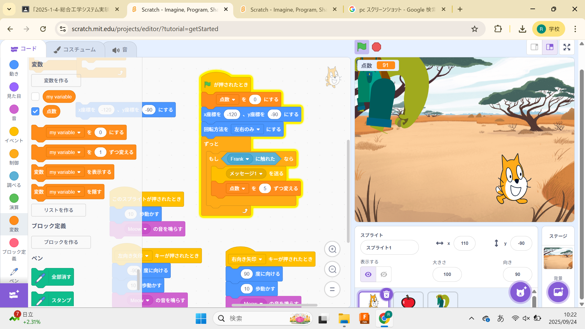

1週目のレポート ： 公大高専１年実習I-1
4b班23番 南場 咲人
第1週目
1-1 サイエンスアート

1.内容
スクラッチでキャラクターを動かしたり、そのキャラクターにペンを持たして座標を指定して円などを描いた。そのあとに、自分で座標などを考えて形を作るプログラミングを行った。
2.感想
スクラッチの操作の仕方を知った。自分で考えたプログラムを動かすことの楽しさを知った。またプログラミングをする機会があればより複雑なプログラムを作成したいと思った。
1-2 ゲーム

1.内容
スクラッチで落ちてくるリンゴを猫を動かして拾い、点数を稼ぐゲームのプログラミングを行った。自分は、リンゴをフランケン変更して、猫の顔を大きくしたりと、少し改良を行った。
2.感想
落ちてくるリンゴを拾うだけのゲームなのにプログラムが少し複雑で作るのが大変だったので、ゲームなどのプログラムを作っている人がどのような苦労をしているのかが少しわかった気がした。
1-3 ホームページ作成
私のホームページ
1.内容
githubを用いてホームページのフォルタ名や、見出し、制作日を変更したり、自分の特徴・特技や趣味・嗜好をそこに書いたりして、自分の自己紹介のホームページを作成した。
2.感想
今まで何らかのホームページを見ることがあっても自分で作るというのは、取り組んだことがなかったし、想像もできなかったので、素晴らしい経験になったと感じた。
各ページへのリンク
1週目のレポート
2週目のレポート
3週目のレポート
私のホームページ